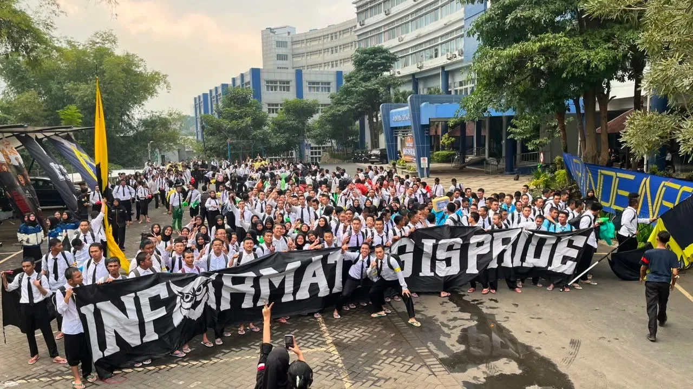
01 / 12 — TIFORIA JOURNAL
Satu nama, banyak suara
Di balik satu bentangan banner, ada banyak orang yang berdiri dengan tujuan yang sama. Momen ini menangkap kebersamaan yang tumbuh ketika nama JTI dibawa bersama.
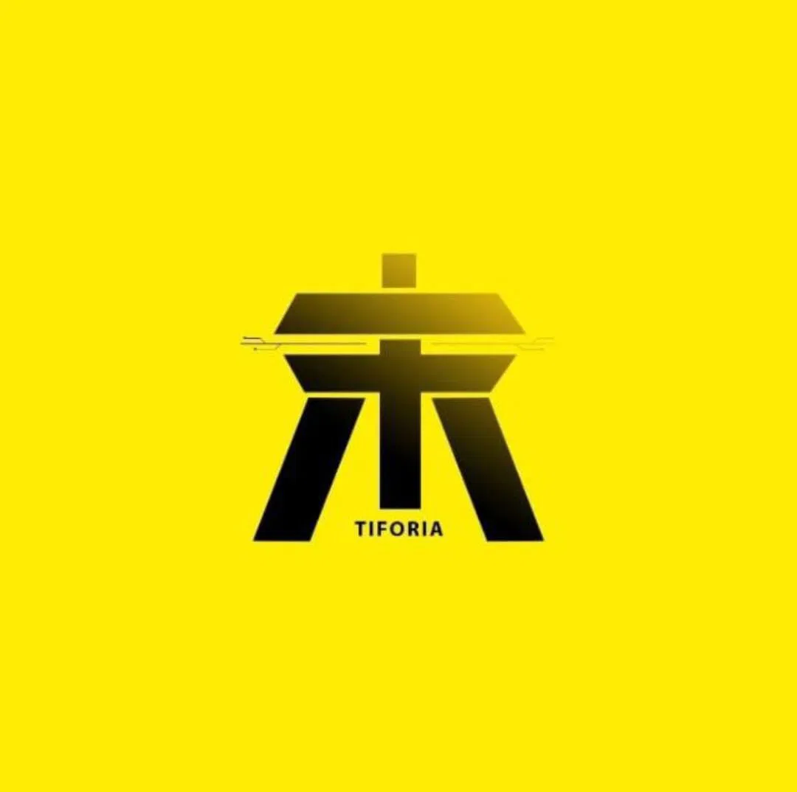
TIFORIA 404Sebuah kultur yang tumbuh dari rasa ingin tahu, kreativitas, dan keberanian untuk bergerak bersama.
TIFORIA adalah kultur yang tumbuh dari lingkungan JTI—dibentuk oleh rasa ingin tahu, kreativitas, disiplin, dan keberanian untuk bergerak bersama.
Logo TIFORIA menyatukan bidang geometris yang tegas dan garis yang saling terhubung. Poros di tengah dapat dibaca sebagai prinsip yang menjaga arah; bentuk di sekelilingnya menjadi ruang bagi banyak karakter untuk tumbuh tanpa kehilangan identitas bersama. Sebuah tanda yang sederhana, kuat, dan terus bergerak—seperti kultur yang dibangun lewat tindakan.
Energi, keberanian, dan optimisme. Kuning menjadi aksen yang tegas—terlihat, percaya diri, dan membawa semangat untuk terus bergerak.
Ketegasan dan fondasi. Hitam memberi bobot pada simbol, menjaga fokus, serta menciptakan kontras yang membuat identitas mudah dikenali.
Kejelasan dan keterbukaan. Ivory adalah warna pendamping pada sistem website, memberi ruang napas dan menjaga pesan tetap nyaman dibaca.
Pembacaan makna warna untuk sistem visual TIFORIA: kuning dan hitam hadir pada logo asli, sementara ivory menjadi warna pendamping komunikasi.
Potongan momen, warna, dan energi yang membentuk perjalanan kami. Setiap frame menyimpan cerita yang layak diingat.

Di balik satu bentangan banner, ada banyak orang yang berdiri dengan tujuan yang sama. Momen ini menangkap kebersamaan yang tumbuh ketika nama JTI dibawa bersama.
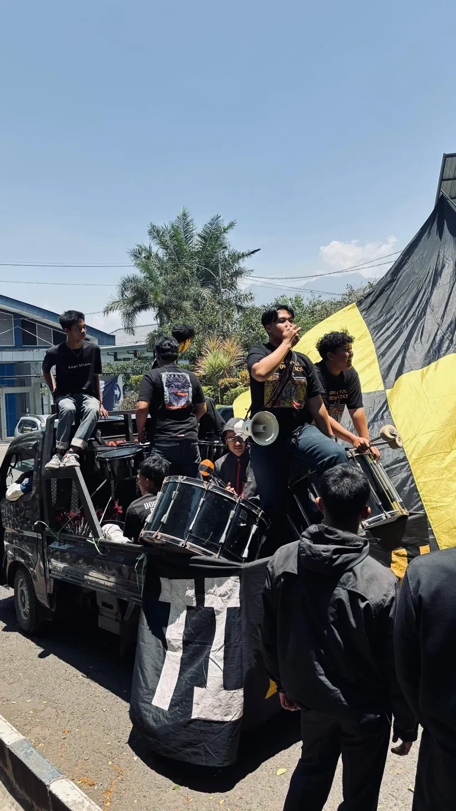
Setiap momen kebersamaan punya energinya sendiri. Dari barisan yang rapat hingga tangan yang terangkat, suasana ini memperlihatkan semangat yang dibangun bersama.
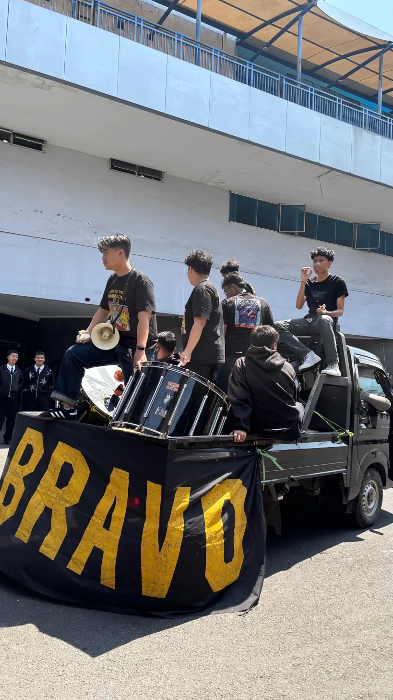
Banner BRAVO menjadi titik perhatian di tengah keramaian. Di sekelilingnya, teman-teman berkumpul dan mengabadikan momen yang menjadi bagian dari perjalanan TIFORIA.
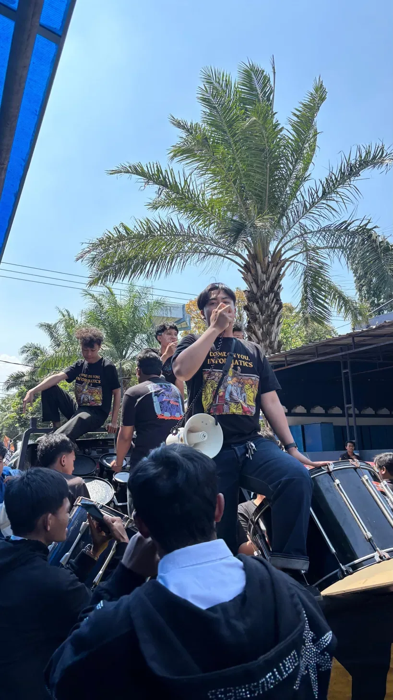
Semangat terasa dari gestur kecil: berkumpul, mengangkat tangan, dan ikut meramaikan suasana. Setiap orang hadir dengan caranya sendiri, tetapi tetap menjadi bagian dari cerita yang sama.
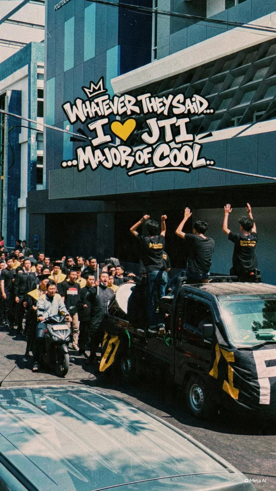
Ruang kampus mempertemukan banyak cara berpikir. Di sinilah karakter diasah: belajar mendengar, berbagi kemampuan, dan saling memberi ruang untuk maju.
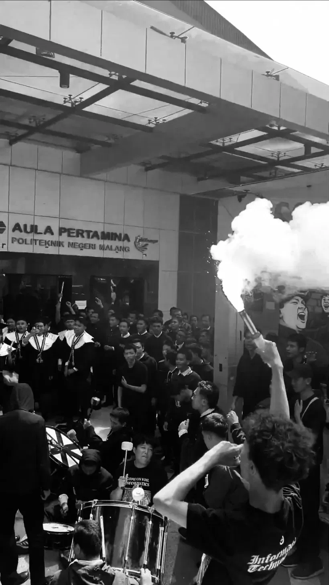
Dalam hitam-putih, perhatian tertuju pada kerumunan, alat musik, dan kepulan asap di tengah suasana. Sebuah frame yang merekam intensitas dukungan dalam satu momen.
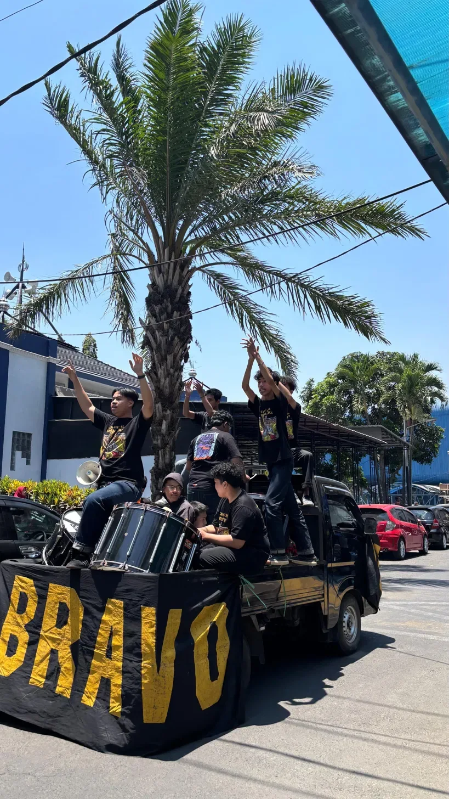
Nama dan warna yang dibawa bersama menjadi penanda kebersamaan. Di sekitar banner BRAVO, suasana terbuka menjadi latar bagi satu lagi potongan perjalanan.
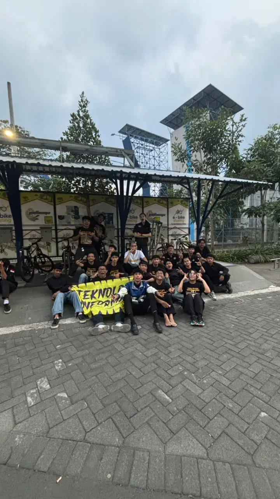
Satu foto bersama menyimpan banyak cerita kecil. Setiap orang datang dari perjalanan yang berbeda, lalu bertemu dalam satu frame dan satu nama yang sama.
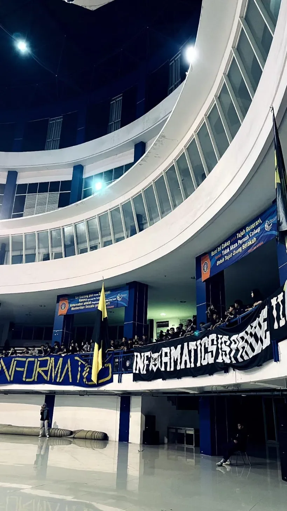
Di ruang yang berbeda dari suasana luar, banner dan warna tetap menjadi bagian dari cerita. Semangat yang sama bisa hadir di berbagai tempat dan keadaan.
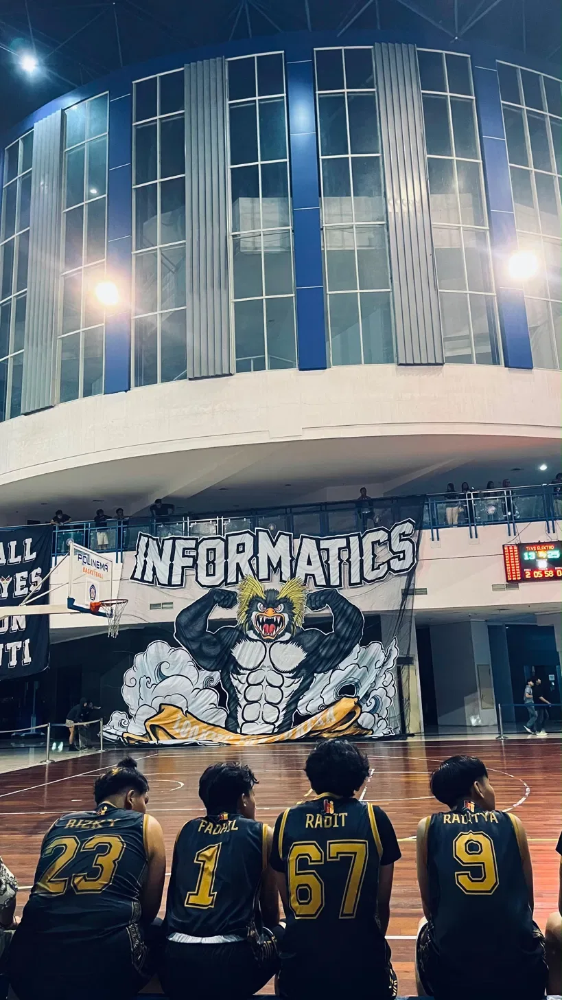
Bangunan kampus menjadi latar bagi banner dan orang-orang yang berkumpul. Sebuah potret tentang membawa nama JTI di lingkungan tempat cerita ini bertumbuh.
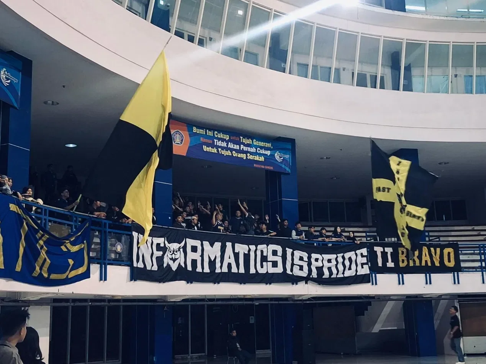
Banner panjang membentang di antara lantai dan ruang terbuka. Pesan yang dibawa terlihat jelas, sementara orang-orang di belakangnya menjadi bagian penting dari cerita.
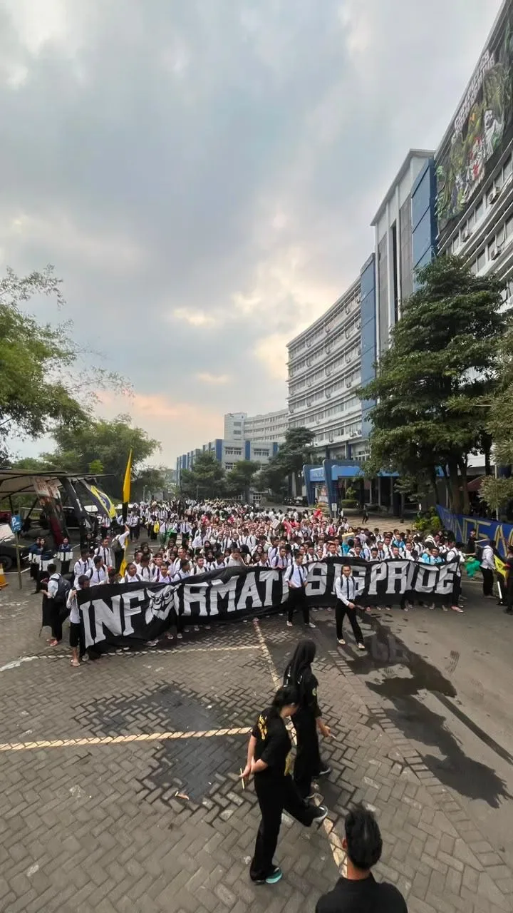
Dilihat dari kejauhan, satu barisan tampak menyatu dengan lingkungan kampus. Foto ini menjadi penutup rangkaian momen: perjalanan yang terus bergerak dan belum selesai.
Ikuti cerita dan energi TIFORIA lewat kanal resmi kami. Suara JTI terus berjalan, di dalam maupun di luar kampus.
Satu rekaman atmosfer yang menjadi bagian dari perjalanan TIFORIA. Dengarkan kembali dan temukan energi di balik momen yang pernah dibagikan.
Whatever they said, I love JTI — major of cool. Sampai nanti di cerita berikutnya.
Back to the beginning